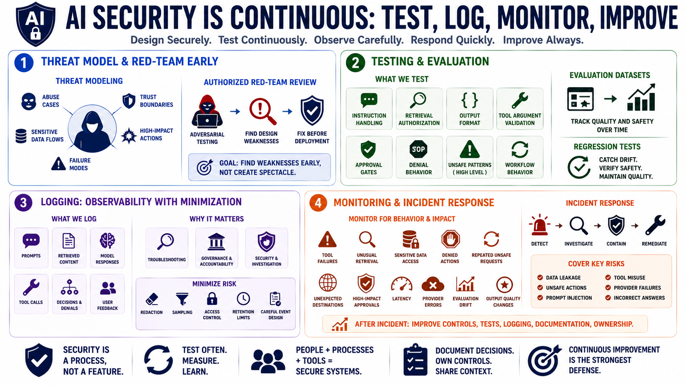

Secure Operations, Testing, Logging, and Monitoring
Connecting to LMS... Progress: in progress

Narration
AI application security must be maintained as models, prompts, tools, data, and workflows change. Threat modeling helps teams identify abuse cases, trust boundaries, sensitive data flows, high-impact actions, and failure modes before deployment. A defensive red-team style review, performed with authorization and care, can explore whether the application follows its intended rules under realistic pressure. The goal is not spectacle. The goal is to find design weaknesses early enough to fix them.
Testing should cover prompts and workflows, not only Python functions. Regression tests can check instruction handling, retrieval authorization, output format, tool argument validation, approval gates, denial behavior, and known unsafe patterns at a high level. Evaluation datasets can track whether changes to prompts, models, retrieval settings, or tools improve behavior without breaking safety expectations. Tests should be repeatable enough to catch drift while still leaving room for human review of nuanced behavior.
Logging must balance observability with minimization. AI applications may log prompts, retrieved content, model responses, tool calls, decisions, denials, and user feedback. These records can be valuable for troubleshooting and governance, but they can also contain secrets, personal data, customer data, source code, and sensitive business context. Redaction, sampling, access control, retention limits, and careful event design help logs support operations without becoming another exposure path.
Monitoring should focus on behavior and impact. Track tool failures, unusual retrieval, sensitive-data access, denied actions, repeated unsafe requests, unexpected destinations, high-impact approvals, latency, provider errors, evaluation drift, and changes in output quality. Incident response should cover data leakage, unsafe actions, prompt injection, tool misuse, provider failures, and incorrect answers that affected decisions. After an incident, improve controls, tests, logging, documentation, and ownership.